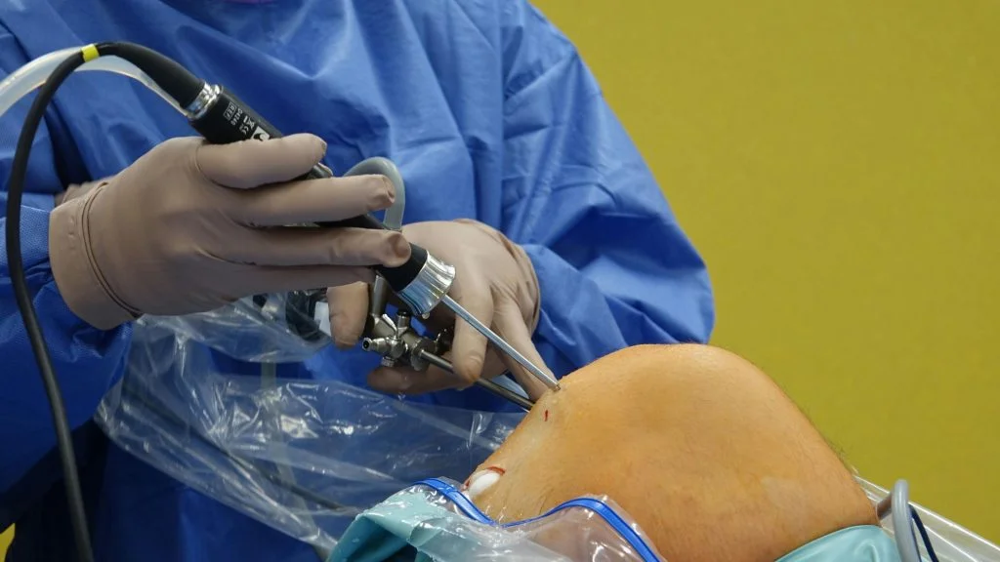

Is Arthroscopic Surgery Right for Your ACL Tear?
An anterior cruciate ligament (ACL) tear can sideline athletes and active individuals. When this key stabilizer in the knee snaps or stretches, it can cause pain, swelling, and instability. If you face an ACL injury, you may wonder if arthroscopic surgery is the best choice for you. This article explains what knee arthroscopy involves, how it treats ACL tears, and the factors that help you decide if it's the right path for your recovery.
What Is Knee Arthroscopy?
Knee arthroscopy is a minimally invasive procedure that lets surgeons look inside the knee joint and treat many problems. During the surgery, the surgeon makes two or three small cuts around the knee.
Through one cut, the surgeon inserts a tiny camera (the arthroscope) with a light. This device sends real-time images to a monitor in the operating room. Through the other cuts, the surgeon passes small instruments to repair damaged tissues.
This technique contrasts with open surgery, in which a large incision exposes the joint. By working through small portals, surgeons can cause less trauma to muscles and tendons. Arthroscopy typically results in less pain, smaller scars, and faster recovery than open surgery.
Why Choose Arthroscopy for an ACL Tear?
An ACL tear often occurs during sports that involve sudden stops, twists, or jumps such as soccer, basketball, and skiing. When the ACL ruptures, the knee can give way during normal activities, making walking and turning difficult. Arthroscopic ACL reconstruction aims to restore knee stability and allow patients to return to their prior activity levels.
Advantages of Arthroscopic ACL Surgery
- Arthroscopy requires only small cuts. Patients typically report less post-operative pain than after open surgery.
- Less tissue disruption means patients often resume light activities and physical therapy sooner.
- The arthroscope's camera gives a magnified view of the ACL stump, surrounding ligaments, and menisci. This precision helps the surgeon place grafts accurately.
- Smaller wounds reduce the chances of infection and other wound-related complications.
- In many cases, ACL arthroscopy can be done on an outpatient basis. Patients may go home the same day.
Non-Surgical vs. Surgical Treatment
Not all ACL tears require surgery. Some partial tears and low-demand patients those who do not plan to return to cutting or pivoting sports can manage with:
- Rest and Activity Modification: Avoiding activities that strain the knee.
- Physical Therapy: Strengthening muscles around the knee and restoring range of motion.
- Bracing: Providing external stability during daily activities.
However, non-surgical care often leaves the knee prone to giving way under stress. Repeated instability episodes can damage the menisci or articular cartilage, raising the risk of early arthritis. For young, active individuals who wish to return to sports, surgical reconstruction usually offers the best long-term outcome.
The Arthroscopic ACL Reconstruction Procedure
Before surgery, you and your surgeon will discuss:
- Timing: Surgery usually occurs after swelling and pain decrease and full knee motion returns.
- Graft Choice: You will use either an autograft (your own tissue) or allograft (donor tissue).
- Anesthesia: Most ACL reconstructions use general anesthesia or a spinal block with sedation.
Incisions and Visualization
The surgeon makes small incisions around the knee:
- Arthroscope Portal: For the camera and light.
- Instrument Portal(s): For tools to remove torn ligament remnants, prepare bone tunnels, and insert the graft.
Saline fluid flows through the joint to clear the view.
Harvesting the Graft
If you choose an autograft, common sources include:
- Patellar Tendon Graft: A strip of tendon from your kneecap area, including bone plugs at each end.
- Hamstring Tendon Graft: Part of one or two tendons on the inner side of the shin.
- Quadriceps Tendon Graft: A portion of the tendon above the kneecap, sometimes with a bone plug.
Allografts come from tissue banks and eliminate the need for a donor-site incision.
Graft Placement
The surgeon drills small tunnels in the tibia and femur, following the natural path of the ACL. The graft slides through these tunnels. It sits in the place of your original ligament and is secured with screws or other fixation devices on each bone.
Closing and Dressing
After securing the graft, the surgeon closes the incisions with sutures or surgical tape. They apply a sterile dressing and often place a compressive wrap around the knee.
Pros and Cons of Arthroscopic ACL Reconstruction
Pros
- 85–90% of patients regain knee stability and return to their chosen sports.
- Less Post-Operative Pain Small incisions reduce trauma.
- Patients often begin gentle motion exercises within days.
- Smaller wounds and sterile fluid irrigation decrease risk of infection.
Cons
- Full return to sports can take 6–9 months of dedicated rehabilitation.
- Autografts may cause tenderness where the tissue is harvested.
- About 5–15% of cases may require another procedure, often due to re-injury.
- Not all surgeons have specialized arthroscopic training, and not all centers have advanced instrumentation.
Who Is a Good Candidate for Arthroscopic ACL Surgery?
You may consider arthroscopic ACL reconstruction if you:
- Are young and active, especially in pivoting sports.
- Experience recurrent knee instability or giving-way episodes.
- Wish to return to high-demand activities safely.
- Have coexisting knee injuries (e.g., meniscus tear) that benefit from surgical repair.
If you have medical conditions that raise surgical risks or if your lifestyle does not involve activities that stress the ACL, non-surgical care may be a reasonable option.
Conclusion
Arthroscopic surgery offers a precise, minimally invasive way to repair ACL tears and restore knee stability. With small incisions and modern instrumentation, surgeons can reconstruct the ligament, repair menisci, and address other knee issues through the same procedure. Most patients regain full function and return to sports in six to nine months.
However, surgery is not the only option. A decision between surgical and non-surgical care should consider your activity level, knee stability needs, overall health, and personal goals. If you do choose arthroscopic ACL reconstruction, commit to a structured rehabilitation program and follow your care team's guidance closely.